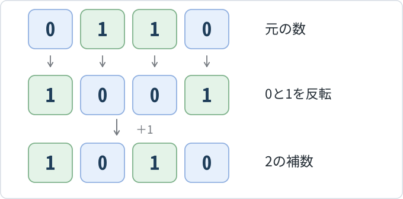
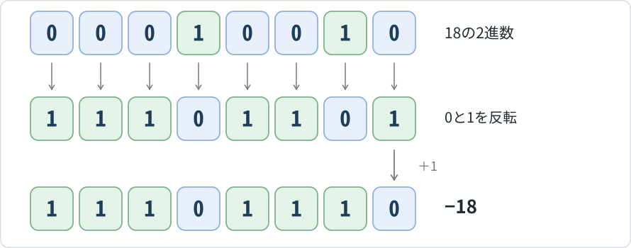
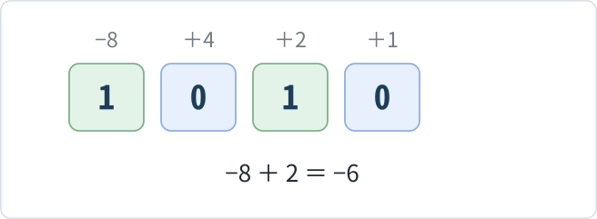
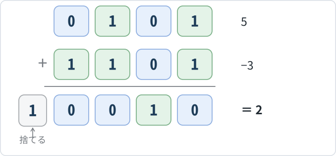
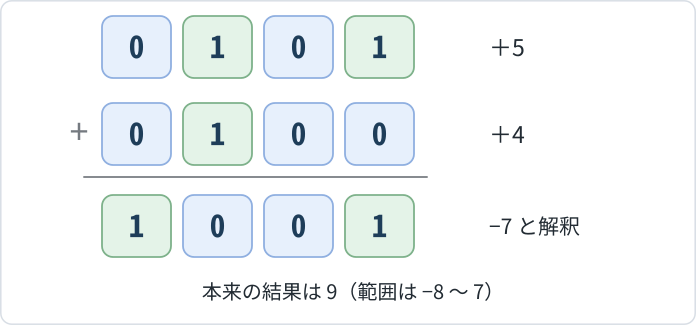

「補数」とは
補数とは、ある数に加えると、決められた桁数の一つ上の位に繰り上がるような数のことです。
例えば、10進数では7に3を加えると10になり、265に735を加えると1000になります。このように、ある数に足すことで、10や100、1000などへとちょうど桁数が1つ増加する値のことです。
コンピュータが扱う2進数でも、同じ考え方が使われます。
例えば、1010₂に対して110₂を加えると、10000₂となります。したがって、2進数1010₂に対する補数は110₂です。
2進数での補数（2の補数）は、コンピュータで負の整数を表したり、引き算を足し算に置き換えたりするために広く利用されています。
ビット数を固定して考える
2の補数を理解するためには、まず、コンピュータが決められたビット数で整数を扱うことを知っておく必要があります。
1ビットは0または1のいずれかを表すため、nビットでは2n通りのビット列を作ることができます。
例えば、4ビットでは、
24＝16通り
のビット列を表すことができます。
符号なし整数として扱う場合、0000₂から1111₂までを使って、10進数では0から15までの整数を表せます。
ここで、4ビットの1111₂（15）に1を加えると、次のようになります。
1111₂＋0001₂＝10000₂
結果の10000₂は5ビットになるため、4ビットには収まりません。
4ビットだけで計算する場合は、左端にはみ出した1を捨て、下位4ビットの0000₂だけを残します。
このように、ビット数を固定した計算では、上位の桁があふれると、その部分を除いた結果が残ります。
2の補数は、この性質を利用したものです。
2の補数の求め方
2の補数は、ビットの操作だけで求められます。その方法は、次の2段階です。
- 各ビットの0と1を入れ替える。
- 入れ替えたビット列に1を加える。
例えば、4ビットの0110₂の2の補数を求めます。
手順① 0と1を入れ替える
0110 → 1001
手順② 1を加える
1001＋0001＝1010
したがって、0110₂の2の補数は1010₂です。

実際に、0110₂と1010₂を加えると、
0110₂＋1010₂＝10000₂
となり、4ビットからあふれた左端の1を捨てると、下位4ビットは0000₂になります。
この操作は、ビット数が変わっても同じです。
例えば、8ビットの00000110₂なら、
00000110 → 11111001 → 11111010
となります。
「すべてのビットを反転し、最後に1を加える」という手順を覚えておけば、どのビット数でも2の補数を求められます。
2の補数による負の整数の表現
ここまで、2の補数を「加えると、決められたビット数の範囲で0になる数」として考えてきました。
この性質を利用すると、負の整数を2進数で表すことができます。
例えば、通常の整数の計算では、
6＋（−6）＝0
となります。
一方、4ビットの2進数では、
0110₂＋1010₂＝10000₂
となり、下位4ビットは0000₂になります。
つまり、4ビットの計算では、1010₂を−6として扱うと、通常の整数と同じように6と−6を加えて0にできます。
このように、2の補数を利用して負の整数を表す方法を「2の補数表現」といいます。
4ビットの例では、次のようになります。
最上位ビットと符号
2の補数表現では、最も左側にあるビットを最上位ビットといい、その値によって整数の正負を判断できます。
- 最上位ビットが0：0または正の整数
- 最上位ビットが1：負の整数
例えば、4ビットの0101₂は＋5、1010₂は−6です。
ただし、これは2の補数表現として解釈した場合です。同じ1010₂でも、符号なし整数として扱えば10を表します。
ビット列が表す値は、そのビット列を符号なし整数として扱うか、2の補数表現として扱うかによって異なります。
4ビットの2の補数表現
4ビットの16通りのビット列は、2の補数表現では次の整数に対応します。
4ビットの2の補数表現
| ビット列 | 10進数 | ビット列 | 10進数 |
|---|
| 0000 | 0 | 1000 | −8 |
| 0001 | 1 | 1001 | −7 |
| 0010 | 2 | 1010 | −6 |
| 0011 | 3 | 1011 | −5 |
| 0100 | 4 | 1100 | −4 |
| 0101 | 5 | 1101 | −3 |
| 0110 | 6 | 1110 | −2 |
| 0111 | 7 | 1111 | −1 |
この表から、4ビットの2の補数表現では、−8から7までの整数を表せることが分かります。また、0000₂は0、1111₂は−1を表します。
このように、2の補数表現では、最上位ビットが0のビット列を0以上の整数に、1のビット列を負の整数に割り当てています。
2の補数表現で表せる整数の範囲
4ビットの2の補数表現では、−8から7までの整数を表せることが分かりました。それでは、ビット数が増えるとどうなるでしょうか。
nビットでは、全部で2n通りのビット列があります。2の補数表現では、その半分を負の整数に、残りの半分を0以上の整数に割り当てます。
したがって、表現できる整数の範囲は次のようになります。
最小値：−2n−1
最大値：2n−1−1
ビット数と2の補数表現の範囲
| ビット数 | 最小値 | 最大値 |
|---|
| 4ビット | −8 | 7 |
|---|
| 6ビット | −32 | 31 |
|---|
| 8ビット | −128 | 127 |
|---|
| 16ビット | −32768 | 32767 |
|---|
例えば、8ビットの2の補数表現では、
最小値：−27＝−128
最大値：27−1＝127
となります。
負の数のほうがひとつ多く表せます。負の数の個数と0以上（0と正の数）の個数が一致しています。
10進数と2の補数表現の変換
ここまでの仕組みを使うと、10進数の負の整数を2の補数表現に変換したり、反対にビット列から整数を求めたりできます。
① 10進数の負の整数を2の補数表現にする
例として、10進数の−18を、8ビットの2の補数表現で表してみます。
手順① 絶対値を2進数に変換する
18を2進数で表すと10010₂です。8ビットで表すため、左側に0を加えます。
18 → 00010010₂
手順② 各ビットの0と1を入れ替える
00010010 → 11101101
手順③ 1を加える
11101101＋00000001＝11101110

したがって、−18の8ビットの2の補数表現は11101110₂です。
② 2の補数表現から10進数に変換する
今度は、負の整数を表すビット列から、10進数を求めてみましょう。
例えば、4ビットの2の補数表現1010₂を考えます。最上位ビットが1なので、この数は負の整数です。
そこで、1010₂の2の補数を求めます。
1010 → 0101 → 0110
0110₂は10進数の6なので、元の1010₂は−6を表します。
つまり、負の整数を表すビット列の2の補数を求めると、その整数の絶対値を調べられます。
ただし、−8のように、絶対値が同じビット数の符号付き整数では表せない場合もあります。その場合は、必要に応じてビット数を増やして考えます。
③ 各ビットの重みを使う方法
2の補数表現は、各ビットの重みを利用して10進数に変換することもできます。
通常の4ビットの2進数では、各ビットの重みは左から8、4、2、1です。一方、2の補数表現では、最上位ビットの重みを負の数として考えます。
4ビットの場合、重みは左から−8、4、2、1です。
4ビットの重みを使った1010₂の計算
| ビットの位置 | 左端 | | | 右端 |
|---|
| 重み | −8 | 4 | 2 | 1 |
|---|
| 1010₂ | 1 | 0 | 1 | 0 |
|---|

したがって、
−8×1＋4×0＋2×1＋1×0＝−6
となります。
一般に、nビットの2の補数表現では、最上位ビットの重みが−2n−1になり、残りのビットには通常の2進数と同じ正の重みを与えます。
この方法では、ビットを反転することなく整数の値を求められます。
2の補数を使った引き算
2の補数を利用する大きな利点は、引き算を足し算に置き換えられることです。
例えば、10進数の5−3を考えます。
5−3＝5＋（−3）
と考えれば、引き算を足し算として計算できます。この考え方を4ビットの2進数に当てはめてみましょう。
手順① 数を2進数で表す
5 → 0101₂
3 → 0011₂
手順② 引く数の2の補数を求める
3の2進数である0011₂の2の補数を求めます。
0011 → 1100 → 1101
1101₂は、4ビットの2の補数表現では−3を表します。
手順③ 足し算をする
5を表す0101₂に、−3を表す1101₂を加えます。
0101₂＋1101₂＝10010₂

4ビットを超えた左端の桁上がりを捨てると、0010₂が残ります。0010₂は10進数の2なので、
5−3＝2
という正しい結果が得られます。
符号なし整数の引き算にも利用できる
例えば、4ビットの符号なし整数で12−5を計算する場合も、同じ方法を利用できます。
12は1100₂、5は0101₂です。5の2の補数は1011₂なので、
1100₂＋1011₂＝10111₂
となります。左端の桁上がりを捨てると0111₂が残り、12−5＝7という結果が得られます。
ただし、この例の1100₂は、4ビットの符号なし整数として12を表しています。4ビットの2の補数表現では−4を表すため、区別が必要です。
オーバフロー（桁あふれ）
ここまで、ビット数を固定した計算では、上位にはみ出した桁を捨てることを説明しました。しかし、上位の桁を捨てた結果が、必ずしも本来の計算結果を正しく表すとは限りません。
計算結果が、決められたビット数で表せる整数の範囲を超えることを、オーバフロー（overflow）といいます。
例えば、4ビットの2の補数表現で5＋4を計算します。
5は0101₂、4は0100₂なので、
0101₂＋0100₂＝1001₂

ところが、4ビットの2の補数表現で1001₂が表す整数は−7です。本来の計算結果は9ですが、4ビットの2の補数表現で表せる範囲は−8～7なので、9を表すことはできません。
このため、符号付きオーバフローが発生しています。